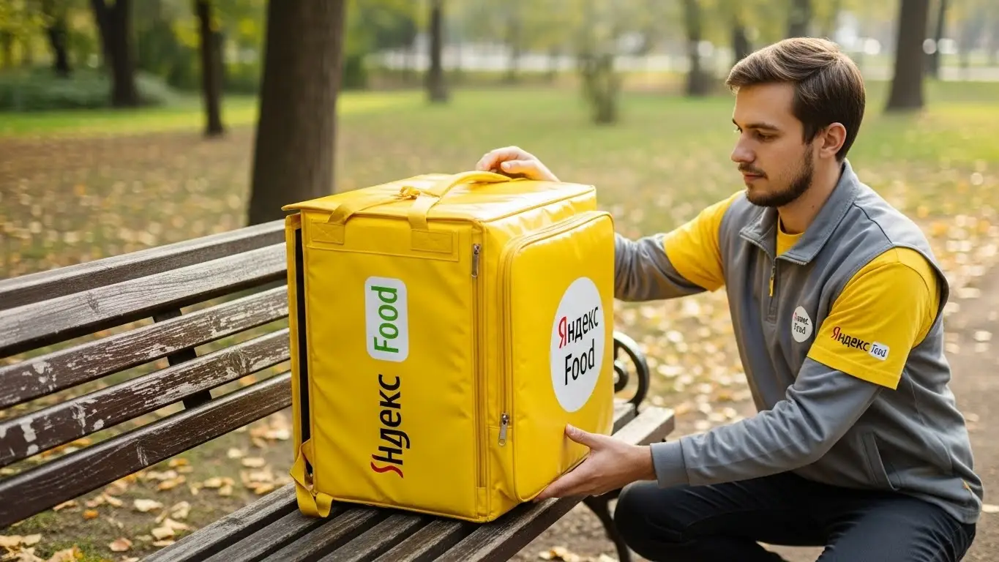
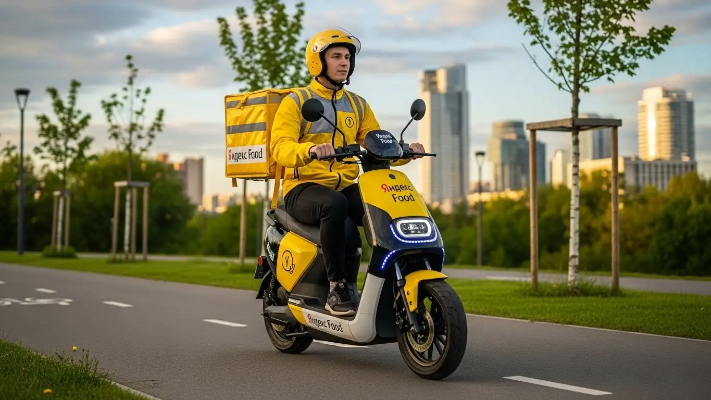
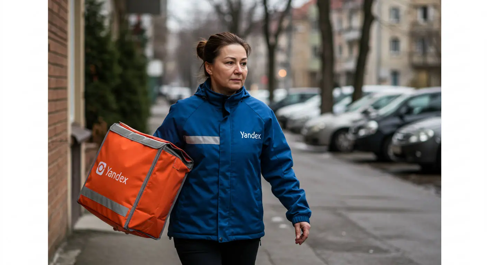
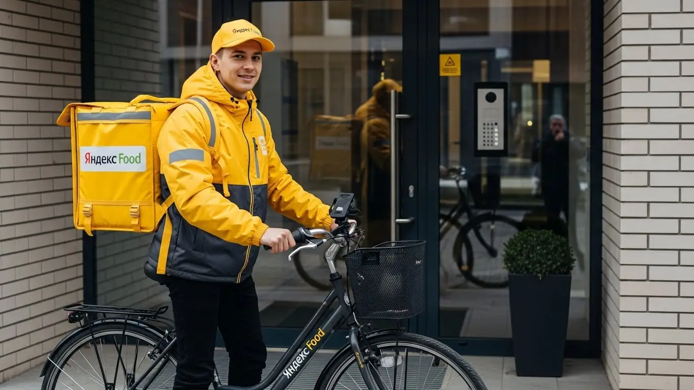

Работа курьером Яндекс Еды в Нижнекамске 2025-2026: доход и условия

- Работа курьером Яндекс Еды в Нижнекамске: для кого эта вакансия и что вы получите
- Сколько вы будете зарабатывать курьером в Нижнекамске: калькулятор дохода и разбор выплат
- Реальный заработок курьера в Нижнекамске: смены и месячный доход
- График работы и форматы занятости
- Требования к кандидату и документы
- Самозанятость, налоги и юридическая чистота
- Пошаговое оформление и первый выход на линию в Нижнекамске
- Пешком, на вело или на авто: что выгоднее в Нижнекамске
- Районы, маршруты и «топовые» зоны заказов в Нижнекамске
- Безопасность, страховка, штрафы и оплата простоя
- Плюсы и возможные минусы работы курьером в Нижнекамске
- Реальные истории и отзывы курьеров из Нижнекамска
- Ответы на главные вопросы о работе курьером Яндекс Еды в Нижнекамске
- Короткие ответы на главные вопросы
- Заключение: твой следующий шаг в Нижнекамске
Все города
Здорово, будущий коллега! Ищешь информацию про работу курьером Яндекс Еды в Нижнекамске и думаешь, что это лёгкие деньги на свободном графике? А не боишься, что будешь зарабатывать копейки, убьёшь подвеску на наших дорогах или застрянешь в вечной пробке на проспекте Химиков в час пик? Забудь про рекламные обещания. Я расскажу, как на самом деле обстоят дела с доставкой именно в нашем городе, без красивых цифр и пустых слов.
Поверь, Нижнекамск — это не Москва. Здесь свои правила игры, и если их не знать, можно быстро разочароваться. Твой реальный доход зависит не от обещаний в приложении, а от того, понимаешь ли ты, где пиковый спрос после смены на «Нижнекамскнефтехиме», как не сжечь весь бензин, катаясь по отдаленным микрорайонам, и как работает система приоритета, которая может либо дать тебе лучшие заказы, либо оставить с мелочью. Чтобы увидеть актуальные условия, воспользоваться калькулятором дохода и подать заявку, переходи на официальную страницу: работа курьером Яндекс Еда в Нижнекамске. Большинство новичков у нас в городе сливаются в первый же месяц, потому что наступают на одни и те же грабли.
В этом гиде мы всё разберём по косточкам. Я покажу, на чём выгоднее всего работать в Нижнекамске — пешком, на велосипеде или на авто. Мы честно посчитаем, сколько денег останется у тебя в кармане после вычета налогов, бензина и амортизации. Я сдам тебе самые «хлебные» районы и время для работы. Расскажу, как наша татарстанская погода влияет на заработок, как не нарваться на штрафы и что делать, если клиент неправ. Мы разложим по полочкам все плюсы и минусы, чтобы ты принял взвешенное решение.
Меня зовут Алексей. Я сам откатал не одну тысячу километров с желтым рюкзаком по улицам Нижнекамска, а сейчас держу небольшой таксопарк-партнер. Так что я знаю эту кухню с обеих сторон — и как простой курьер, и как тот, кто подключает ребят к системе. Никакой воды и рекламы, только мясо, только реальный опыт работы в наших условиях. Готов? Тогда давай по порядку, сейчас всё разложу.
Прежде чем мы погрузимся в детали, вот короткий навигатор по ключевым темам статьи, который поможет быстро сориентироваться.
Что ты точно узнаешь из этого разбора
В этой статье ты ТОЧНО узнаешь:
- Сколько реально можно заработать за смену в Нижнекамске пешком, на велосипеде и на авто?
- В каких районах и в какое время больше всего заказов и как ловить «фиолетовые зоны» с повышенной оплатой?
- Как за 15 минут официально оформиться самозанятым и какие документы для этого нужны?
- За что могут снизить рейтинг, как работает бесплатная страховка и что такое оплата простоя?
- Какой транспорт выбрать для Нижнекамска, чтобы зарабатывать больше, а уставать меньше?
А если тебе некогда читать всю статью — переходи сразу к заключению, где ты найдёшь короткие ответы на все эти вопросы и указания, в каких разделах искать подробности.
А чтобы сразу увидеть основные цифры и факты, вот наглядная инфографика по работе в Нижнекамске.
Работа курьером в Нижнекамске в цифрах

Работа курьером Яндекс Еды в Нижнекамске: для кого эта вакансия и что вы получите
Кому подойдёт эта работа в Нижнекамске
Давай начистоту: эта вакансия не для всех, но для многих — настоящая находка. В первую очередь, это идеальная подработка для студентов местных колледжей и филиала КНИТУ-КХТИ. Свободный график легко подстроить под учёбу: можно выходить на пару часов после пар и иметь свои деньги на расходы, не прося у родителей.
Чтобы стать курьером, не требуется никакого опыта — всему научат с нуля, покажут, как пользоваться приложением, и вперёд. Также это отличный вариант для тех, кто уже трудится на одном из заводов Нижнекамска. Сменный график оставляет много свободных дней, которые легко превратить в дополнительный доход. И конечно, это работа для водителей на своем авто или для любого, кому срочно нужны деньги и важна свобода — здесь нет начальников, стоящих над душой.
Главные преимущества для жителей районов 35-й микрорайон, 45-й микрорайон, Центр
Главный плюс для нижнекамцев — возможность работать буквально у себя под окнами. Тебе не нужно тратить время и деньги на дорогу до «офиса». Живёшь, например, в 35-м или 45-м микрорайоне — выходишь из подъезда, включаешь приложение «Яндекс Про» и как пеший курьер начинаешь брать заказы из ближайших кафе и магазинов. То же самое касается и центральной части города, в районе проспектов Химиков и Строителей.
Это экономит не только время, но и деньги на проезд. Ты работаешь в знакомой обстановке, знаешь все дворы и короткие пути. Заказов в спальных районах хватает, ведь люди всегда хотят есть, а крупные торговые центры и рестораны есть почти везде. Ты не привязан к одному месту и можешь начинать и заканчивать смену там, где тебе удобно.
Краткое обещание по доходу и условиям
Что по деньгам? Заработок в Яндекс Еде в Нижнекамске зависит только от тебя. Если нужна подработка на 3–4 часа в день, можешь рассчитывать на 1500–2500 рублей за смену. При полной занятости, работая по 8–10 часов, активные курьеры, особенно на авто, зарабатывают и до 4000–5000 рублей в день. В месяц при полной загрузке вполне реально выходить на доход в 60 000 – 85 000 рублей.
Ключевые условия работы просты и прозрачны. Во-первых, свободный график — ты сам решаешь, когда и сколько работать. Во-вторых, ежедневные выплаты на карту — не нужно ждать зарплату в конце месяца. В-третьих, начать можно без опыта, всему научат. Это честная сделка: твоё время и усилия в обмен на быстрые и стабильные деньги.
Сколько вы будете зарабатывать курьером в Нижнекамске: калькулятор дохода и разбор выплат
Из чего складывается доход курьера
Твой заработок — это не просто голая ставка, а конструктор из нескольких частей. Понимание этой системы поможет тебе зарабатывать больше. Во-первых, есть базовая оплата за каждый выполненный заказ в Яндекс Еде или Яндекс Доставке. Во-вторых, к ней добавляется плата за расстояние — чем дальше нести или везти, тем больше денег.
Кроме этого, есть повышающие коэффициенты. В часы пик (обед, ужин), в выходные или в плохую погоду спрос на доставку растёт, и стоимость заказов умножается. На карте в приложении «Яндекс Про» такие зоны подсвечиваются — там платят больше. Не забывай про бонусы за выполнение определённого числа заказов и чаевые от клиентов, которые полностью идут тебе в карман. А главное — действует оплата простоя, если заказов временно нет, и сервис может компенсировать стоимость проезда на общественном транспорте.
Как пользоваться калькулятором дохода
На этой странице есть специальный калькулятор, который поможет прикинуть твой будущий доход. Пользоваться им элементарно: выбираешь свой город — Нижнекамск, указываешь, как планируешь доставлять (пешком, на велосипеде или на личном автомобиле), и двигаешь ползунки с часами и днями в неделю. Калькулятор мгновенно покажет примерный заработок за день и за месяц. Это прогноз, но он основан на реальной статистике по нашему городу и даёт хорошее представление о том, на какие цифры можно ориентироваться.
Прикинь свой доход в Нижнекамске
8 ч.
5 дн.
Примерный доход в месяц:
Это примерный расчёт на основе средней ставки в Нижнекамске. Реальный доход зависит от спроса, бонусов, чаевых и вашего графика.
Этот калькулятор — отличный ориентир. А чтобы увидеть полные условия, прочитать ответы на другие вопросы и сразу подать заявку, переходи на страницу работа курьером Яндекс Еда в твоём городе — там собрана вся актуальная информация.
Примеры расчёта для пешего, вело- и автокурьера в Нижнекамске
Чтобы было понятнее, разберём на живых примерах.
- Пеший курьер. Студент, работает в центре города (проспект Химиков, ТЦ «Рамус Молл») по 4 часа вечером после учёбы, 5 дней в неделю. Заказы короткие, но их много. Его средний доход за смену составит около 1600–2000 рублей. В месяц это выливается в 32 000–40 000 рублей — отличные деньги для подработки.
- Велокурьер. Парень работает в выходные по 8 часов, катается между густонаселёнными микрорайонами, например, 35-м и 47-м. На велосипеде он быстрее пешего, берёт больше заказов на средние дистанции. За один выходной день он может заработать 3000–3800 рублей.
- Автокурьер. Мужчина, работает на полную ставку, 5/2 по 8–9 часов. Он берёт заказы по всему городу, включая дальние доставки в промзону или в пригородные посёлки. В плохую погоду его доход резко возрастает за счёт коэффициентов. Его средний дневной заработок — 4000–5500 рублей, что в месяц даёт стабильные 80 000–95 000 рублей до вычета расходов на бензин.
Чтобы не быть голословным, вот пример из жизни. Мой знакомый, Руслан, работает на своей «Гранте» после основной смены на заводе. Выходит на линию с 18:00 до 23:00. В прошлую пятницу лил дождь, и центр города «горел» фиолетовым в приложении — это значит, действовал максимальный коэффициент. Он не лез в пробки, а брал заказы из ТЦ «Сити Молл» в спальные районы. За 5 часов сделал 14 заказов и заработал 3800 рублей, из которых около 400 рублей были чаевыми.
В итоге, твой заработок напрямую зависит от выбранного способа доставки и количества времени, которое ты готов уделять работе. Главный совет: не сиди на месте, изучай карту спроса в «Яндекс Про» и будь готов выходить на линию, когда другие отдыхают — именно тогда можно сорвать куш и получить максимальные бонусы.
Реальный заработок курьера в Нижнекамске: смены и месячный доход
Давай к главному — к деньгам. Сколько реально можно заработать курьером в Нижнекамске, если не лениться, но и не жить на работе? Итоговый доход зависит от трёх вещей: на чём ты доставляешь, сколько часов работаешь и насколько грамотно подходишь к делу. Не стоит ждать московских зарплат, но для нашего города заработок более чем достойный, особенно если сравнивать с другими вакансиями, где нужен опыт, а условия работы не такие гибкие.
Главное, что нужно понять: твой заработок — это не фиксированный оклад. Он складывается из оплаты за каждый заказ в Яндекс Еде или Доставке, доплаты за расстояние, бонусов и чаевых. Поэтому в один день можно заработать 2000 рублей, а в другой, с высоким спросом, — все 4000 за то же время. Гибкость тут работает в обе стороны: и в графике, и в доходе, а выплаты можно получать хоть каждый день.

Диапазон дохода для подработки и полной занятости
Посмотрим на конкретные цифры для Нижнекамска. Для тех, кто ищет подработку на 2–4 часа в день, например, после основной работы или учёбы, реальный доход будет сильно зависеть от способа передвижения.
- Пеший курьер: Выходя на 3–4 часа в вечерний пик, можно рассчитывать на 600–1000 рублей за смену. Месячный заработок при графике 5/2 составит 15 000–25 000 рублей. Идеально для центра города, где много заказов на короткие расстояния.
- Велокурьер: На велосипеде ты мобильнее, поэтому за те же 3–4 часа можно сделать больше заказов. Доход за смену вырастает до 800–1400 рублей, а в итоге за месяц выходит уже 20 000–30 000 рублей.
- Автокурьер: На машине подработка самая выгодная. Даже за пару часов вечером можно взять несколько дальних и дорогих заказов. За 3–4 часа выходит 1200–2000 рублей, что в месяц может принести и 30 000, и 40 000 рублей, смотря как активно работать.
При полной занятости, когда ты на линии по 8–10 часов, цифры совсем другие. Здесь уже можно говорить о полноценной зарплате. Пеший курьер при полном дне может зарабатывать 40 000–50 000 рублей в месяц. Велокурьер — 50 000–65 000 рублей. А курьер на автомобиле при грамотном подходе и полной занятости в Нижнекамске вполне может выйти на доход в 70 000–90 000 рублей в месяц до вычета расходов на бензин.
Как район, время суток и погода влияют на доход
Заработок курьера — это не просто плата за время. Он напрямую зависит от спроса. Чем больше людей хотят заказать еду или товары, тем выше оплата. В приложении «Яндекс Про» зоны с высоким спросом подсвечиваются фиолетовым — это значит, что там действует повышающий коэффициент. Твоя задача — быть в этих зонах в нужное время.
Пиковые часы в Нижнекамске стандартные: обеденное время (с 12:00 до 14:00), когда заказывают еду в офисы, и вечер (с 18:00 до 22:00), когда люди возвращаются с работы. Выходные и праздничные дни — это один сплошной пик, заказов всегда много. Отдельная история — плохая погода. Как только начинается дождь, снегопад или сильная жара, количество заказов взлетает, а вместе с ним и коэффициенты с бонусами. Люди не хотят выходить из дома, а для тебя это — возможность заработать в 1.5–2 раза больше обычного. И чаевых в такую погоду оставляют заметно чаще.
Советы по увеличению заработка от опытных курьеров
Чтобы не просто работать, а именно зарабатывать, нужно подходить к делу с умом. Вот несколько проверенных советов от меня и моих ребят. Во-первых, всегда следи за картой спроса в «Яндекс Про». Не сиди в «мёртвой» зоне, даже если это твой район. Лучше потратить 15 минут и доехать до фиолетовой зоны, где заказы дороже и их больше.
Во-вторых, выбирай плановые слоты в пиковые часы. Вечерние слоты с 18:00 до 23:00 почти всегда самые прибыльные. Система видит, что ты готов работать в самое горячее время, и будет давать больше заказов. В-третьих, не брезгуй заказами из магазинов через Яндекс Доставку. Они часто бывают тяжёлыми, но и оплачиваются лучше, чем доставка одного кофе. Особенно это касается автокурьеров — для вас заказы из гипермаркетов типа «Ленты» на окраине города могут стать золотой жилой.
И последнее: будь вежлив и опрятен. Банально, но это напрямую влияет на чаевые. Простая улыбка и пожелание приятного аппетита могут добавить к твоему дневному заработку несколько сотен рублей. В масштабах месяца это уже приличная сумма.
Например, есть у меня знакомый парень-студент, работает как велокурьер по вечерам. Берёт слот с 18:00 до 22:00, катается в основном по центру — проспект Химиков, проспект Строителей. За 4 часа в будний день спокойно делает 1200–1500 рублей. В пятницу или субботу, когда спрос выше, его доход за те же 4 часа доходит до 2000 рублей. В неделю у него выходит около 8000–9000 рублей чистой подработки.
В итоге, твой реальный заработок в Нижнекамске зависит от твоей стратегии. Можно просто кататься по району и получать средний доход, а можно анализировать спрос, работать в пики и плохую погоду, и зарабатывать значительно выше среднего по городу. Мой совет: в первый месяц попробуй разные слоты и зоны, чтобы понять, где и когда работать выгоднее всего именно для тебя.
График работы и форматы занятости
Одно из главных преимуществ этой работы — свободный график и гибкость. Ты сам решаешь, когда и сколько работать. Никто не стоит над душой с графиком отпусков и не отчитывает за опоздания. Это идеальный вариант для тех, кому нужна подработка без опыта, или для тех, кто не хочет сидеть в офисе с 9 до 6. Но чтобы эта свобода приносила деньги, её нужно правильно организовать.
Система предлагает два основных формата: свободные выходы и плановые слоты. Свободный выход — это когда ты просто нажимаешь кнопку «На линию» в приложении и начинаешь получать заказы. Плановые слоты — это когда ты заранее бронируешь время и район, в котором будешь работать. У плановых слотов есть приоритет в распределении заказов, так что для стабильного дохода лучше ориентироваться на них.
Подработка после учёбы или основной работы
Совмещать доставку с чем-то ещё — проще простого. Это самый популярный сценарий для большинства курьеров. Например, студенты из НХТИ или других колледжей часто выходят на линию после пар, часа в 4–5 вечера, и работают до 9–10. Берут 4-часовой слот, отрабатывают его и получают заработанные деньги на карту, причём выплаты можно настроить ежедневно. За неделю набегает сумма, которой хватает и на развлечения, и на помощь родителям.
Другой пример — работник с одного из наших заводов. У него график 2/2. В свои выходные он не сидит дома, а садится в машину и выходит на полную 8-часовую смену. За два таких дня он зарабатывает 7000–8000 рублей. Говорит, что так быстрее копит на отпуск с семьёй. Главное — не переусердствовать и оставлять время на отдых, чтобы не «перегореть».
Полная занятость: как выглядит типичный день курьера
Если ты рассматриваешь доставку как основную работу, твой день будет более структурированным. Типичный день курьера на полной занятости в Нижнекамске выглядит так: выход на линию около 10–11 утра, чтобы захватить первые обеденные заказы. Работаешь до 14:00–15:00, потом, когда спрос падает, уходишь на перерыв. Можно съездить домой пообедать, отдохнуть.
Возвращаешься на линию к 17:00–18:00, как раз к началу вечернего пика. Этот период — самый прибыльный, работаешь до 22:00–23:00. Районы тоже меняются в течение дня. Утром и днём больше заказов в центре и деловых кварталах, а вечером спрос смещается в спальные районы — 35-й, 45-й микрорайоны и другие. Такой рваный график позволяет и заработать максимум, и не устать, как на конвейере.
Как планировать слоты и выходы через приложение «Яндекс Про»
Всё управление твоим графиком происходит в приложении «Яндекс Про». Там есть раздел «Расписание», где можно посмотреть доступные плановые слоты на несколько дней вперёд. Слоты бывают разной длительности — от 2 до 12 часов. Ты выбираешь удобный для себя район и время, и бронируешь его.
Крайне важно не опаздывать на забронированный слот. Нужно быть в выбранной зоне за несколько минут до начала и нажать кнопку «Начать слот». Если регулярно опаздывать или отменять слоты в последний момент, твой рейтинг в системе может снизиться, а это повлияет на доступ к хорошим заказам. Поэтому планируй своё время заранее. Если понимаешь, что не успеваешь, лучше отменить слот хотя бы за несколько часов. Приложение — твой главный рабочий инструмент, изучи его как следует, и оно поможет тебе зарабатывать стабильно и много.
Возьмём, к примеру, курьера на своём авто. Человек работает полный день, 5/2. Он заранее, в воскресенье, планирует себе слоты на всю неделю вперёд, выбирая самые оживлённые районы. Утром берёт слот с 11:00 до 15:00 в центре, потом перерыв, и второй слот с 18:00 до 22:00 в большом спальном районе. За такой день он проезжает 80–100 км и зарабатывает в среднем 3500–4000 рублей «грязными».
В общем, график в доставке — это инструмент, которым нужно научиться пользоваться. Система даёт тебе полную свободу, но чтобы она превратилась в стабильный доход, нужна дисциплина и планирование через «Яндекс Про». Начни с коротких слотов по 3–4 часа, пойми ритм города, а потом уже выстраивай свой идеальный рабочий график.
Требования к кандидату и документы
Многие думают, что для работы курьером нужны особые разрешения или кипа бумаг. На деле всё гораздо проще. Условия работы в Яндекс Еде максимально лояльные, чтобы начать мог практически каждый — даже без опыта. Главное — заранее подготовить небольшой пакет документов, и тогда всё оформление займёт от силы час.
Возраст, гражданство и базовые условия
Начнём с главного — возраста. Если ты хочешь работать пешим курьером или курьером на велосипеде в Яндекс Еде или Доставке, то начать можно уже с 16 лет. Это отличная возможность для старшеклассников и студентов получить первый официальный заработок. Единственное условие — понадобится письменное согласие от родителей или опекунов. А вот для работы водителем-курьером на автомобиле требования строже: здесь берут только с 18 лет, что логично, ведь нужна ответственность за рулём.
По гражданству условия тоже лояльные: подойдёт паспорт гражданина РФ или любой страны, входящей в ЕАЭС (это Беларусь, Казахстан, Армения, Киргизия). Каких-то сверхъестественных требований к физической форме нет. Понятно, что пешему курьеру придётся много ходить, а велокурьеру — крутить педали, так что базовая выносливость не помешает. Но никто не заставит тебя бежать марафон. Главное — быть активным и готовым к движению. И, конечно, нужен смартфон на базе Android, потому что вся работа идёт через приложение «Яндекс Про».
Какие документы нужны для работы курьером
Чтобы быстро стать курьером и не бегать в последний момент, собери всё необходимое заранее. Список короткий, и большинство документов у тебя уже есть под рукой. Вот что понадобится для старта:
- Паспорт. Основной документ для подтверждения личности и возраста. Нужен будет его скан или качественное фото.
- ИНН (Идентификационный номер налогоплательщика). Он нужен для оформления самозанятости. Если не помнишь свой номер, его легко узнать за пару минут на сайте ФНС.
- Банковская карта. Любая карта российского банка, оформленная на твоё имя. Именно на неё будут приходить ежедневные выплаты за заказы. Карта родственников или друзей не подойдёт.
- Медицинская книжка. Так как часто придётся доставлять продукты и готовую еду, медкнижка может потребоваться. Если её нет, не проблема — её можно оформить уже в процессе, партнёры подскажут, где это сделать быстрее.
- Для водителей-курьеров дополнительно: водительское удостоверение (ВУ) и свидетельство о регистрации транспортного средства (СТС).
Советую сразу сделать чёткие фотографии этих документов на телефон. Когда будешь заполнять анкету, сможешь быстро их загрузить и не тратить время на поиски.
Можно ли работать с 16 лет и какие есть альтернативы
Да, ещё раз повторю: работать в Яндекс Еде пешим или велокурьером можно с 16 лет. Это не слухи, а официальная возможность. Но здесь есть важные юридические нюансы, прописанные в Трудовом кодексе РФ для защиты несовершеннолетних. Во-первых, обязательно нужно письменное согласие одного из родителей. Во-вторых, рабочий день будет сокращённым, а ночные смены и переработки полностью исключены. Это сделано для того, чтобы подработка не мешала учёбе и здоровью.
Если по каким-то причинам этот вариант не подходит — например, родители против или не хочется возиться с документами, — альтернативы, конечно, есть. Можно поискать подработку вроде раздачи листовок. Но, по моему опыту, работа курьером даёт несравнимо больше: ты сам планируешь свой график, видишь, сколько заработал за каждый заказ, и получаешь деньги сразу. Это учит финансовой ответственности и самостоятельности лучше любой другой подработки для студентов.
Был у меня случай: пришёл 17-летний парень, студент местного Нижнекамского нефтехимического колледжа. Хотел на новый телефон заработать, но боялся, что никуда не возьмут без опыта. Я ему объяснил всю схему: поговорил с его отцом, показал, что всё официально и безопасно. Подготовили согласие, сфотографировали паспорт и ИНН. Парень зарегистрировался как самозанятый за 10 минут. Уже на следующий день после пар он вышел на своём велосипеде доставлять заказы Яндекс Еды на пару часов в районе проспекта Химиков. За первую неделю, работая по 3–4 часа, он заработал около 5000 рублей. Для него это были огромные деньги, и главное — свои, честно заработанные.
В общем, требования к кандидатам и условия работы вполне реальные и не должны пугать. Основной пакет документов есть у каждого, а возрастные ограничения для пеших и велокурьеров позволяют начать зарабатывать раньше. Главное — твоё желание. Мой совет: не откладывай, подготовь фото документов прямо сейчас, чтобы процесс регистрации и возможность стать курьером не затянулись.
Самозанятость, налоги и юридическая чистота
Многих новичков, которые хотят стать курьером, пугает слово «самозанятость». Кажется, что это что-то сложное, связанное с налогами и бюрократией. На самом деле всё наоборот. Этот налоговый режим (НПД) специально придумали, чтобы такие люди, как мы — курьеры, таксисты, фрилансеры — могли работать легально и максимально просто, без бумажной волокиты.
Почему курьеры Яндекс Еды работают как самозанятые
Работа через самозанятость (официально это «Налог на профессиональный доход», или НПД) — это стандарт для сотрудничества с Яндексом. И это большой плюс. Во-первых, это гарантирует, что твой доход полностью «белый» и ты работаешь официально. Ты можешь подтвердить свой заработок, если, например, захочешь взять кредит или получить визу. Во-вторых, это даёт тебе свободу. Ты не наёмный работник, а независимый партнёр сервиса, который сам решает, когда и сколько работать — это и есть тот самый свободный график.
Самое главное — это простота. Тебе не нужно нанимать бухгалтера или разбираться в сложных декларациях. Вся отчётность формируется автоматически. Яндекс передаёт данные о твоём доходе в налоговую, а тебе остаётся только раз в месяц нажать кнопку «Оплатить» в приложении. Это честный и современный формат, который защищает и тебя, и сервис от любых юридических проблем.
Как за 10 минут оформить самозанятость через «Мой налог»
Процесс регистрации настолько простой, что справится даже тот, кто с техникой на «вы». Забудь про очереди в налоговой. Всё делается онлайн с твоего смартфона. Вот пошаговая инструкция по оформлению:
- Скачай приложение. Зайди в Google Play или App Store и найди официальное приложение ФНС России — «Мой налог».
- Начни регистрацию. Открой приложение и выбери самый простой способ — «Регистрация по паспорту РФ».
- Отсканируй паспорт. Наведи камеру телефона на главный разворот паспорта. Приложение само распознает все данные. Проверь, чтобы всё было верно.
- Сделай селфи. Дальше приложение попросит тебя сфотографироваться. Это нужно для подтверждения личности, чтобы никто не смог зарегистрироваться по твоим документам.
- Подтверди регистрацию. После проверки данных останется только нажать кнопку «Подтверждаю». Всё, с этого момента ты официально являешься самозанятым.
Весь процесс реально занимает не больше 10 минут. После этого нужно будет только привязать свой статус самозанятого в приложении «Яндекс Про», и можно начинать выполнять заказы.
Сколько и как платить налоги
Теперь о самом важном — о деньгах. Ставка налога для самозанятых курьеров — одна из самых низких в стране. Ты будешь платить 6% с дохода, который получаешь от юридических лиц, то есть от партнёров сервиса Яндекс Еда. Никаких других скрытых сборов или взносов в пользу государства нет.
Процесс оплаты налога тоже максимально автоматизирован. Тебе не нужно ничего считать вручную. «Яндекс Про» автоматически формирует чеки за твои услуги и отправляет информацию в налоговую. До 12-го числа каждого месяца в приложении «Мой налог» появляется сумма налога за предыдущий месяц. Оплатить его нужно до 28-го числа. Просто заходишь в приложение, видишь сумму, привязываешь свою банковскую карту и нажимаешь одну кнопку. Это проще, чем оплатить мобильную связь. Работать так гораздо безопаснее, чем получать «серый» доход и переживать, что к тебе могут возникнуть вопросы от налоговой.
У меня в таксопарке был водитель старой закалки, который лет десять работал неофициально и панически боялся любых налогов. Когда мы начали сотрудничать с Яндексом, он до последнего сопротивлялся оформлению самозанятости. Я сел с ним, и мы вместе скачали «Мой налог». Он был в шоке, когда через пять минут регистрация была завершена. А когда в конце месяца он увидел налог на профессиональный доход в пару тысяч рублей и оплатил его одной кнопкой, он сказал: «И это всё? А я думал, тут целая история с декларациями». Этот пример отлично показывает, что все страхи — от незнания.
Итак, самозанятость — это не проблема, а удобный инструмент для легальной работы курьером. Налоги низкие, процесс регистрации и оплаты элементарный. Мой совет: не бойся этого шага. Оформить самозанятость можно за 10 минут, после чего ты сможешь спокойно работать, зная, что у тебя всё чисто и по закону.
Пошаговое оформление и первый выход на линию в Нижнекамске
Многие думают, что устроиться курьером в Яндекс — это долго и муторно, с кучей бумаг и собеседований. На деле все условия созданы для того, чтобы ты мог начать зарабатывать как можно быстрее, часто в тот же день. Весь процесс отлажен и проходит в основном онлайн, без лишней бюрократии. Главное — твоё желание работать, а система поможет с остальным, даже если у тебя нет опыта.
Шаг 1–2: анкета и онлайн-обучение
Всё начинается с простой анкеты на сайте. Никаких резюме на три страницы — только базовые данные: ФИО, номер телефона, город Нижнекамск, гражданство, а также данные паспорта и ИНН. После отправки система быстро проверяет информацию, обычно это занимает от 15 минут до пары часов. Никто не будет звонить твоим бывшим начальникам, это просто формальность.
Как только анкету одобрят, тебе откроется доступ к короткому онлайн-обучению. Это не нудные лекции, а несколько коротких видеороликов и инструкций. Там по делу объясняют, как пользоваться приложением «Яндекс Про», какие есть стандарты сервиса (например, как вежливо общаться с клиентом) и правила безопасности на линии. В конце будет небольшой тест из нескольких вопросов, чтобы убедиться, что ты всё понял. Справится даже школьник, так что не переживай.
Шаг 3: получение сумки и доступа к заказам в Нижнекамске
Самый важный атрибут курьера — фирменная термосумка или термокороб. Без неё система не даст доступ к заказам из ресторанов Яндекс Еды и магазинов. После успешного обучения в приложении «Яндекс Про» появится информация, где в Нижнекамске можно получить экипировку. Обычно это офис партнёра сервиса или специальный пункт выдачи.
Ты приходишь по указанному адресу, показываешь в приложении, что обучение пройдено, и тебе выдают сумку. Иногда её могут даже доставить на дом. Как только ты заберёшь термокороб и отметишь это в приложении, твой аккаунт будет полностью активирован. С этого момента ты — полноценный курьер, готовый принимать заказы.
Шаг 4: первый слот и первый доход
Теперь самое интересное — зарплата. Заходишь в «Яндекс Про», открываешь карту Нижнекамска и видишь зоны с доступными слотами. Это и есть свободный график: ты сам выбираешь промежутки времени для работы. Для начала советую выбрать свой район или тот, который знаешь как свои пять пальцев. Так будет спокойнее, не придётся плутать в поисках нужного адреса.
Выбираешь удобный слот, например, на 3-4 часа, нажимаешь кнопку «На линию» — и всё, ты в работе. Заказы начнут поступать почти сразу, особенно если выйти в обеденное или вечернее время. Выполнил первый заказ, второй, третий — и вот уже на твоём балансе в приложении появились первые заработанные деньги. Сервис предлагает ежедневные выплаты: их можно вывести на карту в тот же день или на следующий, не дожидаясь зарплаты неделями.
Из практики: один мой знакомый студент из Нижнекамска решил попробовать такую подработку. Утром заполнил анкету, пока был на парах. Днём заехал в офис партнёра за сумкой, а вечером вышел на пару часов в своём 45-м микрорайоне. Просто гулял по знакомым дворам, отнёс три заказа из пиццерии и два из магазина. За два с половиной часа его доход составил около 800 рублей. Говорит, даже не заметил, как работа прошла, — просто музыка в ушах и знакомые улицы.
В общем, весь процесс от анкеты до первых денег занимает от нескольких часов до одного дня. Никаких сложностей, всё интуитивно понятно и сделано для людей. Для вывода заработка потребуется статус самозанятого, но он оформляется онлайн за 10–15 минут прямо через приложение.
Пешком, на вело или на авто: что выгоднее в Нижнекамске
Выбор транспорта — это не просто вопрос удобства, это твой главный рабочий инструмент, который напрямую влияет на доход. В Нижнекамске, городе компактном, но с разными типами застройки, у каждого формата есть свои плюсы и зоны, где он приносит максимум денег. Не стоит сразу брать кредит на машину, если ты живёшь в центре, — возможно, твои ноги принесут тебе больше.
Пеший курьер: для центра и плотной застройки в Нижнекамске
Если ты живёшь в центральной части города или рядом с ней, работа пешим курьером — отличный старт. Основные заказы концентрируются вдоль проспектов Химиков и Строителей, где полно кафе, ресторанов и жилых многоэтажек. Расстояния между точками А (ресторан) и Б (клиент) здесь часто не превышают 1-2 километров. Пешком ты не зависишь от пробок, не ищешь парковку и не тратишься на бензин.
Это идеальный вариант для подработки: вышел на 3-4 часа, погулял по своему району, выполнил 5-7 коротких заказов и получил свой заработок. Плюс это, по сути, оплачиваемый фитнес. Конечно, в плохую погоду или для доставки на другой конец города этот вариант не подходит, но для плотной застройки центра Нижнекамска — то, что нужно.
Велокурьер: быстрые доставки между спальными районами
Велосипед — это золотая середина. Он даёт скорость и манёвренность, позволяя обслуживать более широкую территорию. В Нижнекамске на велосипеде удобно работать между соседними микрорайонами, например, возить заказы из торговых зон на проспекте Мира в новые жилые комплексы в 47-м и 49-м микрорайонах. Ты легко объезжаешь любые заторы и срезаешь путь через парки, вроде «СемьЯ» или Корабельной рощи.
Велокурьер зарабатывает больше пешего, так как успевает выполнять больше заказов за то же время и может брать доставки на 3-5 километров. Это уже не просто прогулка, а полноценная работа, требующая выносливости. Но если ты любишь крутить педали, то сможешь совмещать приятное с полезным и хорошо зарабатывать, особенно в тёплое время года.
Водитель-курьер: заказы по всему городу и пригороду Камские Поляны
Автомобиль открывает доступ к самым дорогим и дальним заказам. Это твой вариант, если ты нацелен на максимальный доход и полную занятость. На машине выгодно возить заказы между удалёнными частями города, например, с одного конца проспекта Химиков на другой, или выполнять доставки в пригородные посёлки — Камские Поляны, Красный Ключ, Афанасово. Туда пешком или на велосипеде просто не добраться.
В плохую погоду — дождь, снег, сильный ветер — спрос на автодоставку взлетает, а вместе с ним и коэффициенты. Пока другие сидят дома, ты можешь зарабатывать вдвойне. Конечно, есть расходы на бензин и амортизацию, но они с лихвой перекрываются стоимостью заказов. Плюс на машине можно брать объёмные посылки из магазинов и Яндекс Маркета, которые пешему курьеру не унести.
Сравнение форматов доставки в Нижнекамске
| Параметр | Пеший курьер | Велокурьер | Курьер на авто |
|---|---|---|---|
| Потенциальный доход | Низкий/Средний | Средний/Высокий | Высокий/Максимальный |
| Расходы | Нулевые (только удобная обувь) | Обслуживание велосипеда | Бензин, ТО, страховка |
| Лучшие зоны в Нижнекамске | Центр (пр. Химиков, Строителей) | Спальные микрорайоны, парковые зоны | Весь город, пригороды (Камские Поляны) |
| Главный плюс | Простота, нет затрат, фитнес | Скорость, манёвренность, экономия | Комфорт, дорогие заказы, всепогодность |
| Главный минус | Низкая скорость, зависимость от погоды | Нужна выносливость, сезонность | Расходы на авто, возможны пробки |
У меня был знакомый водитель-курьер, который начинал как велокурьер. Летом отлично катался по городу, его заработок составлял 2500-3000 рублей за смену. Но с наступлением холодов понял, что теряет в деньгах. Посмотрел по карте спроса в «Яндекс Про», что постоянно «горят» зоны с заказами в пригород, особенно в Камские Поляны. Взял свою старенькую «Гранту», зарегистрировался как курьер на своем авто, и в первый же дождливый вечер его доход составил почти 5000 рублей. Просто потому, что возил то, что другие не могли: большие заказы и на дальние расстояния.
В итоге, выбор транспорта зависит от твоих целей и возможностей. Для подработки в центре Нижнекамска хватит и своих ног. Если хочешь зарабатывать больше и готов к нагрузкам — велосипед твой друг. А если нацелен на максимальный доход и готов покрывать расходы на машину — без вариантов, только авто. Мой совет: начни с того, что у тебя уже есть. Поработай неделю, оцени спрос в своём районе, а потом уже решай, стоит ли вкладываться в другой транспорт.
Районы, маршруты и «топовые» зоны заказов в Нижнекамске
Чтобы работа курьером в Нижнекамске приносила хороший доход, а не превращалась в хаотичную езду по городу, нужно понимать, где и когда концентрируются заказы. Просто выйти на линию и ждать — стратегия так себе. Гораздо выгоднее заранее планировать свои маршруты, опираясь на знание города и подсказки приложения. Это как рыбалка: нужно знать, где клюёт.
Где больше всего заказов: ТРЦ, бизнес-центры и жилые кварталы
Самые «жирные» места — это точки притяжения людей. В Нижнекамске это, в первую очередь, крупные торговые центры. В обеденное время и по вечерам фуд-корты в ТРЦ «Рамус Молл» на проспекте Химиков и в «Сити Молле» на улице Баки Урманче генерируют постоянный поток заказов. Люди из ближайших офисов и жилых домов заказывают еду прямо оттуда.
Кроме того, стабильно высокий спрос держится в центре города, вдоль проспектов Мира и Строителей. Здесь много офисов, банков и заведений, поэтому в будни с 12 до 15 часов и вечером после 18:00 всегда есть работа. В выходные и праздничные дни хорошо «стреляют» зоны отдыха, например, окрестности парка «Семья» или набережная Камы, откуда люди заказывают пиццу и закуски. В таких зонах часто действуют повышающие коэффициенты, так что заработок в час может быть заметно выше.
Работа в своём районе: примеры для популярных жилых кварталов
Не обязательно каждый раз ехать в центр, чтобы хорошо заработать. В Нижнекамске хватает заказов и в крупных спальных районах, что идеально подходит для пеших курьеров или велокурьеров. Например, в новых микрорайонах вдоль проспекта Химиков или в густонаселённых кварталах в районе парка Тукая сосредоточено много кафе, суши-баров и сетевых пиццерий.
Живёшь, скажем, в 35-м микрорайоне — можешь спокойно брать заказы из ближайших заведений и разносить их по соседним домам. Это экономит время и топливо, если ты водитель-курьер на автомобиле. Ты отлично знаешь все дворы и короткие пути, что даёт преимущество в скорости. Пока кто-то стоит в пробке на проспекте Мира, ты уже выполняешь второй или третий заказ у себя «на районе».
Как выбирать зоны и слоты в «Яндекс Про», чтобы не мотаться впустую
Приложение «Яндекс Про» — твой главный инструмент для планирования. На карте в реальном времени подсвечиваются зоны с повышенным спросом — они окрашены в фиолетовый цвет. Чем насыщеннее цвет, тем выше коэффициент и, соответственно, твой доход за заказ. Перед началом смены всегда открывай карту и смотри, где сейчас «горячо».
Главный совет новичку: не гонись за одним заказом с высоким коэффициентом на другой конец города. Это ловушка. Пока ты доедешь туда, потратишь бензин и время, зона может уже «остыть». Гораздо продуктивнее выбрать одну-две соседние «фиолетовые» зоны и работать внутри них. Так ты будешь получать заказы цепочкой, один за другим, с минимальными холостыми пробегами. Планируй слоты на пиковые часы — обед (12:00–14:00) и ужин (18:00–21:00), тогда и спрос выше, и заработок стабильнее.
Из практики: один знакомый водитель-курьер поначалу брал все заказы подряд и мотался из одной части Нижнекамска в другую, сжигая бензин и нервы. За восьмичасовую смену у него выходило 2000–2200 рублей. После того как я посоветовал ему сконцентрироваться на одной зоне — например, работать только в центре и прилегающих кварталах в вечерний пик — его доход за те же 8 часов вырос до 3000–3500 рублей, потому что сократились простои и пустые пробеги.
В общем, ключ к хорошему заработку курьером в Нижнекамске — это анализ карты спроса и работа в зонах с высокой плотностью заказов. Не ленись изучать город и приложение. Мой совет: начни со своего района, чтобы освоиться, а потом постепенно подключай центральные зоны в пиковые часы.
Безопасность, страховка, штрафы и оплата простоя
Работа курьером, как и любая другая «на колёсах», связана с определёнными рисками. Ты постоянно в движении, на дороге, взаимодействуешь с разными людьми. Важно понимать, что ты не брошен один на один с возможными проблемами. В сервисе есть чёткие правила и механизмы защиты, которые работают как для твоей безопасности, так и для поддержания качества доставки.
Бесплатная страховка на сменах и что она покрывает
Один из самых важных моментов, о котором не все новички знают, — это бесплатная страховка жизни и здоровья. Она автоматически действует, как только ты выходишь на активный слот и выполняешь заказ. Тебе не нужно за неё платить или оформлять какие-то бумаги, всё уже включено.
Что это значит на практике? Если, не дай бог, ты попал в ДТП на машине, упал с велосипеда и получил травму или просто поскользнулся на льду во время пешей доставки — страховка покроет расходы на лечение. Сумма покрытия доходит до 2 миллионов рублей. Главное — в любой такой ситуации сразу же связаться со службой поддержки через «Яндекс Про» и зафиксировать происшествие. Это реальная защита, которая даёт уверенность, что в сложной ситуации тебя не оставят с проблемой.
Правила безопасности на дороге и при доставке
Страховка — это хорошо, но лучшая защита — это собственная осторожность. Базовые правила нужно соблюдать неукоснительно. Если ты пеший курьер, всегда используй пешеходные переходы, а в тёмное время суток носи светоотражающие элементы. Для велокурьеров — шлем и фонари обязательны, не гоняй по тротуарам, как сумасшедший, уважай пешеходов.
Для водителей-курьеров на автомобиле правила стандартные: не превышай скорость, не отвлекайся на телефон за рулём, паркуйся так, чтобы не мешать другим. Зимой в Нижнекамске дороги бывают скользкими, поэтому держи дистанцию и будь вдвойне внимателен. Кроме того, аккуратно обращайся с заказом: надёжно закрепляй напитки, чтобы они не пролились, и всегда проверяй комплектность заказа перед тем, как забрать его из ресторана.
Какие бывают штрафы и как их избежать
Давай честно: штрафы в сервисе есть. Но они применяются не для того, чтобы отобрать у тебя деньги, а чтобы поддерживать порядок и качество. Обычно это не прямой денежный штраф, а снижение рейтинга, что влияет на приоритет в получении заказов. Получить «минус» можно за грубость клиенту или сотруднику ресторана, за сильное опоздание без уважительной причины, за повреждение заказа по своей вине или за отмену уже принятого заказа.
Как этого избежать? Элементарно. Будь вежлив, даже если клиент не в настроении. Если понимаешь, что опаздываешь из-за пробки или долгого ожидания в ресторане, сообщи в поддержку. Аккуратно упаковывай еду в термокороб. Если ты не хочешь выполнять заказ, просто не принимай его. Соблюдение этих простых правил гарантирует, что твой рейтинг будет высоким, а работа — стабильной.
Что такое оплата простоя и как она защищает ваш доход
Это одна из ключевых фишек, которая выгодно отличает условия работы в Яндекс Еде. Оплата простоя — это твоя финансовая подушка безопасности. Представь, ты вышел на запланированный слот, находишься в нужной зоне, готов работать, а заказов по какой-то причине мало. В большинстве других сервисов ты бы просто сидел и терял время и деньги.
Здесь же, если заказов нет, сервис начисляет тебе минимальную гарантированную оплату за то время, что ты находишься на линии. Это защищает твой доход и мотивирует выходить на смены, даже если ты не уверен в спросе. Условия по гарантированному доходу могут меняться в зависимости от города и зоны, но сам факт его наличия — это огромное преимущество. Ты знаешь, что твоё время в любом случае будет оплачено.
Был случай у одного студента, который подрабатывал велокурьером. Он взял дневной слот в будний день, но из-за сильного ливня заказов было очень мало. Прождав почти час, он выполнил всего одну короткую доставку. В итоге, благодаря оплате простоя, он получил за это время сумму, сопоставимую с выполнением 2–3 заказов в обычную погоду. Это и есть та самая стабильность.
Итак, безопасность и правила — это не пустые слова. Сервис страхует тебя на сменах и гарантирует минимальный доход, но от тебя требуется соблюдение ПДД и стандартов качества. Всегда будь на связи с поддержкой: любая проблема — от пролитого кофе до ДТП — решается гораздо проще, если ты сразу о ней сообщил.
Плюсы и возможные минусы работы курьером в Нижнекамске
Давай начистоту: любая работа — это не только деньги, но и свои особенности. Курьерская доставка в сервисах вроде Яндекс Еды — не исключение. Здесь есть как жирные плюсы, ради которых люди приходят и остаются, так и моменты, к которым нужно быть готовым. Я видел всякое, поэтому расскажу без прикрас, что тебя ждёт в Нижнекамске.

Сильные стороны работы курьером в Нижнекамске
Главное, за что ценят эту работу, — свобода и быстрые деньги. Во-первых, это гибкий график. Ты сам решаешь, когда выходить на линию через приложение Яндекс Про. Учишься в НХТИ — можешь развозить заказы после пар. Работаешь на заводе по сменам — бери слоты в свои выходные. Никто не стоит над душой с графиком с девяти до шести. Ты сам себе начальник.
Во-вторых, ежедневные выплаты. Забудь про «зарплату два раза в месяц». Деньги за смену приходят на карту практически сразу, что очень выручает, когда нужно быстро закрыть финансовый вопрос. Кроме того, ты работаешь в своём районе. Можно выбрать зону рядом с домом и не тратить время на дорогу через весь город. И, конечно, официальное оформление: работаешь как самозанятый, платишь небольшой налог, и всё чисто. Плюс ко всему, на каждой смене действует бесплатная страховка жизни и здоровья — это серьёзная гарантия, которой нет у многих «серых» подработок.
С какими сложностями чаще всего сталкиваются курьеры
Теперь о другой стороне медали. Первая и главная сложность — физическая нагрузка, особенно для пеших и велокурьеров. Целый день на ногах или в седле — это не в офисе сидеть. Ноги гудят, спина устаёт. Мой совет: начинай с коротких смен по 3–4 часа, носи удобную обувь и не геройствуй в первые же дни. Организм привыкнет, главное — дать ему время.
Вторая сложность — погода. В Нижнекамске бывает и ледяной дождь, и метель, и жара под тридцать. Работать в таких условиях — то ещё испытание. Но есть и плюс: в плохую погоду заказов всегда больше, коэффициенты в Яндекс Про выше, а значит, и доход растёт. Главное — правильно одеться: непромокаемая куртка, термобельё зимой и удобная обувь. Третий момент — общение с людьми. 99% клиентов — адекватные, но иногда попадаются и не самые приятные персонажи. Важно сохранять спокойствие, вежливо делать свою работу и в случае конфликта сразу писать в поддержку — они помогут разрулить ситуацию.
Кому такая работа подходит, а кому лучше поискать другой формат
Давай прикинем, твой ли это формат. Работа курьером идеально подходит, если ты студент и ищешь подработку со свободным графиком. Она подойдёт тем, у кого есть основная работа, но нужен дополнительный доход. Если ты активный человек, не любишь сидеть на месте и хочешь, чтобы тебе платили за движение, — это твой вариант. Также это отличный старт для тех, у кого нет опыта работы, — здесь всему научат, основные требования минимальны.
А вот кому стоит поискать что-то другое. Если ты не переносишь физические нагрузки и мысль о ходьбе или езде на велосипеде в течение нескольких часов вызывает у тебя ужас, — лучше не надо. Если тебе нужна абсолютная стабильность с фиксированным окладом, здесь такого нет — доход зависит только от тебя. И если ты не очень дисциплинирован и тебе сложно заставить себя выйти на смену без пинка начальника, свободный график может сыграть с тобой злую шутку.
Был у меня парень, начинал как пеший курьер. Через неделю пришёл выжатый как лимон, говорит: «Не могу, тяжело». Я ему посоветовал не бросать сразу, а попробовать сменить формат. Он взял у друга старенький велосипед, и дело пошло совсем по-другому. Заказов стал успевать делать больше, уставал меньше, да и сам процесс ему понравился. За месяц он заработал на свой велик и сейчас, доставляя заказы Яндекс Еды, стабильно делает по 2500–3000 рублей за 8-часовую смену.
В общем, работа курьером в Нижнекамске — это компромисс между свободой и физическим трудом. Если ты ценишь гибкость, быстрый доход и готов к активной работе на свежем воздухе, то это отличный вариант. Главное — трезво оценивать свои силы и быть готовым к капризам погоды.
Реальные истории и отзывы курьеров из Нижнекамска
Теория — это хорошо, но лучше всего об условиях работы говорят реальные люди, которые каждый день выходят на линию в нашем городе. Я собрал несколько коротких историй от разных ребят, чтобы у тебя сложилась полная картина.
История студента НХТИ, который совмещает учёбу и доставку
«Меня зовут Айдар, мне 20, учусь в НХТИ на химика-технолога. Живу в 35-м микрорайоне. Работать пешим курьером в Яндекс Еде начал полгода назад, потому что нужны были карманные деньги, а график учёбы плотный. Обычно выхожу на 3–4 часа по вечерам в будни, после пар, и беру один длинный слот на 6–8 часов в субботу. В основном работаю в своём районе и в центре, на проспекте Химиков, там всегда много заказов из кафе в приложении.
В среднем за неделю выходит около 6-7 тысяч рублей. Для меня это отличная подработка. Ежедневные выплаты очень удобны. Конечно, бывает, устаёшь, особенно если много заказов в дома без лифта. Но для меня это как фитнес, за который ещё и платят. Главное — удобная обувь и хороший плейлист в наушниках».
Опыт автокурьера, который выходит в пиковые часы
«Я Руслан, мне 41 год. У меня есть основная работа на производстве, но график сменный, остаётся много свободного времени. Решил подрабатывать на своем авто. В Яндекс Доставке я работаю только в часы пик: с 12:00 до 14:00 и с 18:00 до 21:00. В это время всегда самые высокие коэффициенты и куча заказов. Мне нравится, что не нужно работать целый день, чтобы хорошо заработать.
Чаще всего беру заказы из центра, где много ресторанов, и развожу их по спальным районам — 30-й, 45-й, 47-й микрорайоны. На машине это быстро и удобно, особенно в плохую погоду, когда пешим курьерам тяжело. За 4–5 часов в день в пиковое время мой доход может составлять 2000–2500 рублей уже за вычетом бензина. Для меня это идеальный формат дополнительного заработка без отрыва от основной жизни».
Мнение велокурьера о работе в центре и спальниках
«Я Лена, мне 24. Я велокурьер, для меня это и работа, и спорт. По опыту могу сказать, что у работы в центре и в спальных районах Нижнекамска есть свои плюсы и минусы. Центр, особенно район проспекта Строителей и ТЦ „Рамус Молл“, — это постоянный поток заказов в приложении Яндекс Про. Расстояния короткие, можно сделать много доставок за час. Но минус — много людей, иногда сложно проехать, и приходится часто оставлять велосипед на улице.
Спальные районы, например, в районе парка „СемьЯ“, — это совсем другая история. Здесь спокойнее, меньше суеты. Заказы в основном из продуктовых магазинов, часто бывают объёмные, поэтому без термокороба не обойтись. Расстояния между точками могут быть больше, поэтому иногда приходится подождать следующий заказ. Лично мне нравится комбинировать: начинаю смену в центре, а когда там становится слишком людно, перемещаюсь в более спокойные жилые кварталы. К этому быстро привыкаешь и начинаешь чувствовать, где в данный момент будет больше денег».
Как видишь, у каждого свой подход и своя стратегия. Кто-то берёт количеством заказов в центре, кто-то — дальностью и комфортом на авто, а кто-то находит баланс между разными зонами. Главный вывод: в Нижнекамске можно найти удобный для себя формат и условия работы курьером в Яндексе, если понимать специфику города и правильно планировать своё время.
Ответы на главные вопросы о работе курьером Яндекс Еды в Нижнекамске
Собрал здесь ответы на те вопросы, которые мне задают чаще всего. Без воды, только по делу, чтобы у тебя не осталось сомнений по поводу этой вакансии.
Ответы на ключевые вопросы кандидатов
— Нужно ли оформлять самозанятость и как платить налоги?
Да, нужно. Работа курьером в Яндекс Еде — это официальная подработка, а не «халтура» за наличку, поэтому для выплат понадобится статус самозанятого (НПД). Это самый простой способ легализовать свой доход. Оформление статуса занимает не больше 10 минут через приложение «Мой налог» от ФНС, нужен только паспорт и ИНН. Налог составляет 6% с поступлений от Яндекса, но никакой бухгалтерии вести не придётся: приложение само рассчитает сумму, а тебе останется только нажать кнопку «Оплатить» раз в месяц. Это честно, законно и гораздо проще, чем кажется.
— Какой телефон и интернет нужны для работы курьером?
Для работы понадобится смартфон на базе Android, версия не ниже 7.0. Приложение «Яндекс Про», через которое приходят заказы, на айфонах не работает. Телефон должен уверенно держать зарядку, потому что GPS и мобильный интернет его быстро садят. Мой тебе совет: сразу купи хороший пауэрбанк, чтобы не остаться без связи посреди смены. Интернет должен быть стабильным, иначе будешь терять заказы и время.
— Нужно ли покупать термосумку и сколько она стоит?
Нет, покупать её сразу не обязательно. Фирменную термосумку или термокороб выдают партнёры сервиса. Часто её можно получить бесплатно или взять в аренду за символическую плату. Иногда можно использовать и свою сумку, если она подходит по размерам и сохраняет температуру, но лучше уточнить этот момент при подключении.
— Что будет, если в смену мало заказов — как работает оплата простоя?
Это одна из главных фишек Яндекс Еды, которая защищает твой доход. Если ты вышел на запланированный слот, а заказов в твоей зоне мало, ты не будешь сидеть бесплатно. Сервис гарантирует минимальную оплату за час. Например, если гарантия 250 рублей в час, а заказами ты заработал только 150, то Яндекс доплатит тебе 100 рублей. Это страховка от «пустых» часов, особенно когда только начинаешь и не знаешь самые выгодные для доставки районы.
— Есть ли в Яндекс Еде штрафы и за что их могут применить?
Прямого понятия «штраф» почти нет, есть система приоритета и мотивации. Если ты систематически нарушаешь условия работы — грубишь клиентам, портишь заказы, постоянно опаздываешь на слоты или отменяешь уже принятые заявки — твой приоритет будет падать. А чем ниже приоритет, тем меньше заказов тебе будут предлагать. По сути, ты наказываешь сам себя рублём. Поэтому просто работай на совесть: будь вежлив, аккуратен с едой и пунктуален — и никаких проблем не будет.
— Сколько реально можно заработать курьером в Нижнекамске и чем эта вакансия лучше других сервисов?
Реальный заработок в Нижнекамске зависит только от тебя. Если это подработка на 3–4 часа в день, то пеший курьер может делать 1200–1800 рублей. Курьер на автомобиле на полной смене (8–10 часов) в пиковые дни с хорошими коэффициентами может увозить и 3500–4500 рублей. Главное отличие от местных доставок — это стабильный поток заказов и технологии Яндекса. У сервиса огромная база клиентов, плюс есть оплата простоя и бесплатная страховка на смене. Мелкие конторы такого не предложат.
— Можно ли работать без опыта и что будет на обучении?
Конечно, можно. Опыт работы для этой вакансии не требуется, всему научат. Обучение — это короткий онлайн-курс прямо в приложении. Посмотришь несколько видеороликов, прочитаешь инструкции и пройдёшь небольшой тест. Там рассказывают, как пользоваться приложением «Яндекс Про», как правильно общаться с клиентами и представителями ресторанов, что делать в нестандартных ситуациях. Всё просто и понятно, займёт не больше часа.
— Берут ли с 16–17 лет и какие есть ограничения по возрасту?
Да, в Яндекс Еду берут с 16 лет на позиции пешего или велокурьера. Но есть важные условия. Во-первых, понадобится письменное согласие одного из родителей или опекуна. Во-вторых, по закону у тебя будет сокращённый рабочий день — не больше 4–5 часов в смену. Никаких ночных доставок и работы в праздничные дни. А вот водителем-курьером на автомобиле можно стать только с 18 лет при наличии водительских прав.
Короткие ответы на главные вопросы
Если нет времени читать всю статью, вот краткая шпаргалка с выводами по самым важным моментам.
Короткие ответы: главное из статьи по существу
Короткие ответы на ключевые вопросы
Сколько реально можно заработать за смену в Нижнекамске пешком, на велосипеде и на авто?
Для подработки (3–4 часа) пеший курьер может заработать 600–1000 ₽, велокурьер — 800–1400 ₽, а водитель — 1200–2000 ₽. При полной занятости доход автокурьера может достигать 70 000–90 000 ₽ в месяц до вычета расходов.
→ Подробнее читай в разделе «Реальный заработок курьера в Нижнекамске: смены и месячный доход».В каких районах и в какое время больше всего заказов и как ловить «фиолетовые зоны» с повышенной оплатой?
Больше всего заказов в центре (пр. Химиков, Строителей) и у ТРЦ «Рамус Молл» и «Сити Молл». Пиковые часы — обед (12:00–14:00) и ужин (18:00–22:00), а также в плохую погоду. Следите за картой спроса в приложении «Яндекс Про», чтобы работать в зонах с повышенным коэффициентом.
→ Подробнее читай в разделе «Районы, маршруты и «топовые» зоны заказов в Нижнекамске».Как за 15 минут официально оформиться самозанятым и какие документы для этого нужны?
Нужно скачать приложение «Мой налог» и зарегистрироваться по паспорту. Процесс занимает 10–15 минут. Для работы понадобятся паспорт, ИНН и банковская карта на ваше имя.
→ Подробнее читай в разделе «Самозанятость, налоги и юридическая чистота».За что могут снизить рейтинг, как работает бесплатная страховка и что такое оплата простоя?
Рейтинг снижают за грубость, порчу заказа и частые опоздания на слоты. На смене действует бесплатная страховка жизни и здоровья. Если заказов нет, сервис начисляет гарантированную минимальную оплату за час, чтобы вы не теряли деньги.
→ Подробнее читай в разделе «Безопасность, страховка, штрафы и оплата простоя».Какой транспорт выбрать для Нижнекамска, чтобы зарабатывать больше, а уставать меньше?
Пеший формат идеален для центра с плотной застройкой. Велосипед даёт скорость для работы между спальными районами. Автомобиль — самый выгодный вариант для дальних заказов, работы в пригороде и в плохую погоду.
→ Подробнее читай в разделе «Пешком, на вело или на авто: что выгоднее в Нижнекамске».
Для полного понимания темы рекомендую прочитать всю статью — там ты найдёшь примеры, сравнения и дельные советы из практики.
Заключение: твой следующий шаг в Нижнекамске
Краткие выводы по работе курьером в Нижнекамске
Если коротко, то работа курьером Яндекс Еды в Нижнекамске — это реальный и доступный способ заработка, который отлично подходит и для полной занятости, и как подработка. При полной смене на авто можно выходить на доход в 70 000–85 000 рублей, а в качестве дополнительного заработка — стабильно добавлять к стипендии или основной зарплате 25 000–35 000 рублей. Главные плюсы — это гибкий график, который ты сам себе составляешь, и прозрачные условия с ежедневными выплатами. На фоне других вакансий в городе Яндекс выигрывает за счёт большого количества заказов, гарантированной минимальной оплаты и страховки, которая защищает тебя на смене.
Как сделать первый шаг уже сегодня
Чтобы стать курьером Яндекс Еды, не нужно иметь специального опыта или проходить долгие собеседования. Весь процесс занимает немного времени и проходит онлайн.
- Заполни анкету. Это делается онлайн, займёт минут 10–15. Укажи свои данные и выбери способ доставки.
- Подготовь документы. Тебе понадобятся паспорт, ИНН и реквизиты банковской карты. Если тебе 16–17 лет — заранее возьми письменное согласие от родителей.
- Пройди обучение. Это короткий онлайн-курс с тестом в приложении. Справишься за час, не выходя из дома.
- Выбери первый слот. После активации аккаунта заходи в «Яндекс Про», выбирай удобный район и время — и выходи на линию. Первые деньги можешь заработать уже сегодня вечером или завтра.